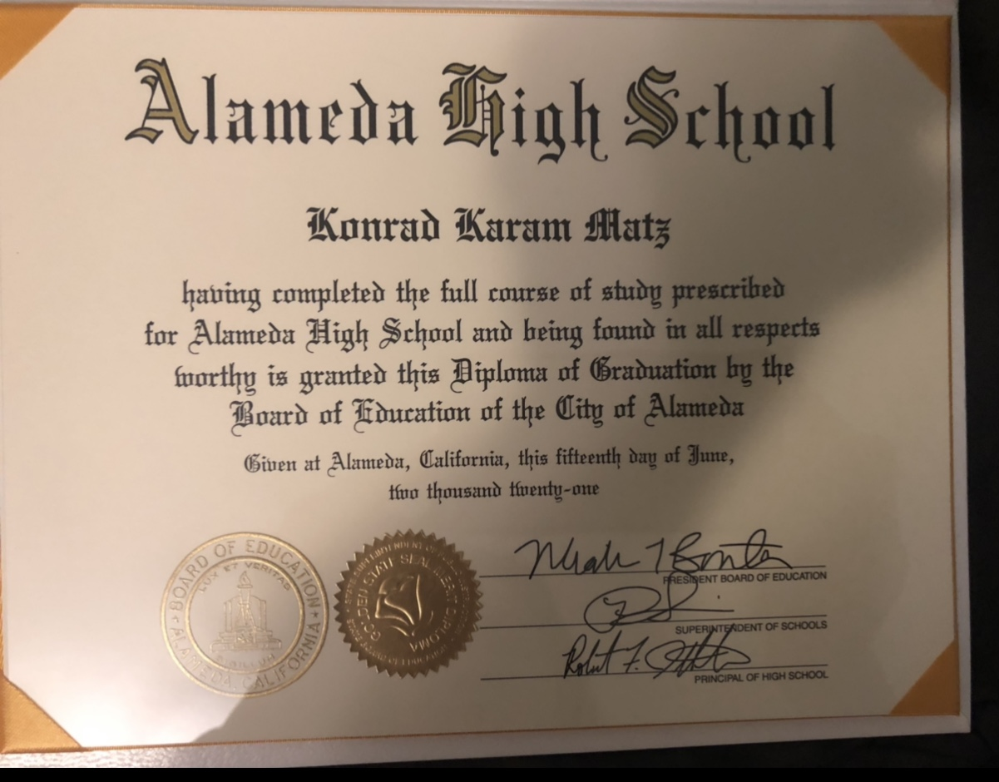

Konrad Matz
I am an 18 year old student at UC Riverside. I am originally from Oakland,California but I currently reside in Riverside,California for school purposes. I am a first-year history major and have always expressed a love for history. This love for history has stuck with me all the way till now. I am particularly interested in World War 2 and Ancient Civilizations like Rome but I also like all time periods of history. I would like to work in this museum as a Artifact collection Manager and managing a team to manage these artifacts because it is my dream to have a job in the field of history/archaeology.
As a historian/archaeologist I have worked in a team for a lot of my life so I am familiar with working in a group and collaborating to complete projects. I pride myself on my creativity and flexibility along with my leadership skills. I also believe I would be great for this job because I am a hard working person and I'm always looking to continue and strive to better myself for the betterment of my group and community. Some of my soft skills include leadership, communication, understanding, teamwork, and flexibility. My hard skills include beginner level spanish, word processing application proficiency, and survey administartion software proficiency.
I am applying for the position of Artifact Collection Manager because of my avid interest in history. This love caused me to further pursue my education in the history field. With the position of Artifact collection Manager, I believe that I will be able to organize everything correctly and efficiently because of my experience in a leadership position. I was the Alameda High School Sports Committee Commissioner for all 4 years of my high school career. This leadership position required and taught me how to work in a team along with keeping close communication with higher ups in the school like teachers,coaches, and the athletic director. From this prior leadership position I have learned to balance when I assert my opinion to the group but also learning how to take a step back and really listen to my group. I have also worked as an Intern at my father's law office, during my time as an intern for my father I learned how to manage my work load more efficently and how to prepare better for work and big projects. Volunteering for beach clean ups also helped shape me into a better team player through talking with others and learning to disperse to get work done better and more effeciently.
Experience
Leadership Sports Committee
• Comissioner of committee
• Required to keep close relations with school members and staff
Education
UC Riverside
Alameda High School
Portfolio
